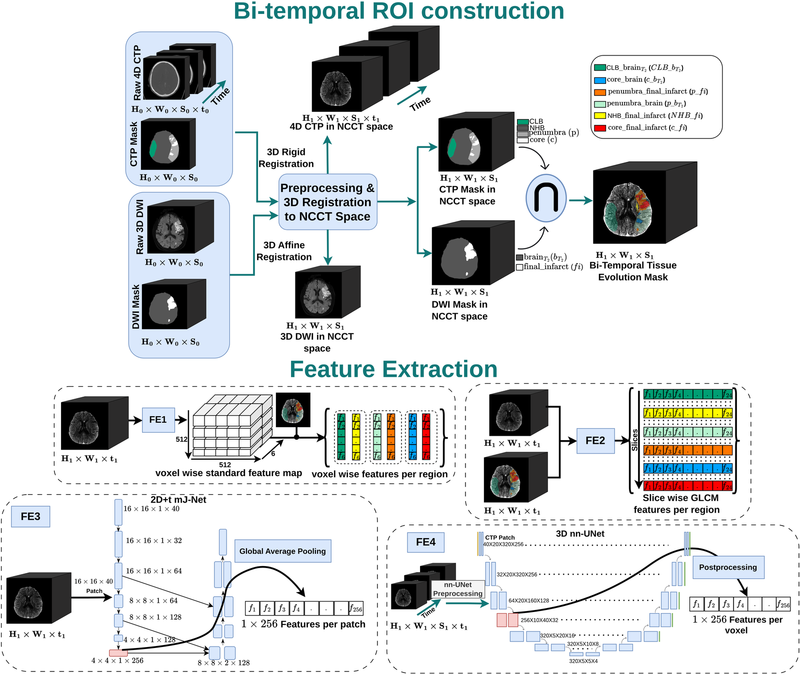
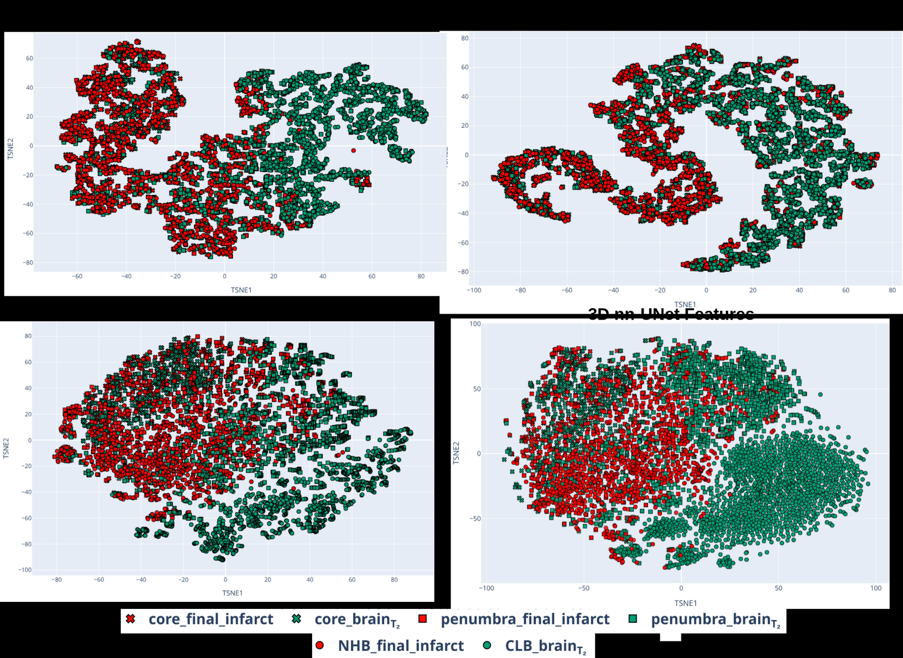
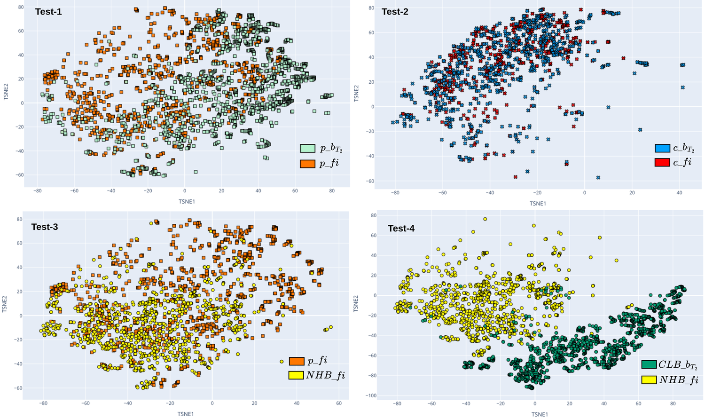
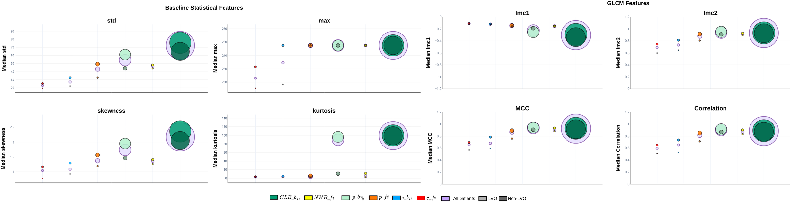

University of Stavanger, Norway · Stavanger University Hospital
* Equal contribution
This page is private and unlisted while the paper is under review.
Framework Overview
Admission CT perfusion (T1) is spatially aligned with follow-up diffusion MRI (T2) to construct six outcome-aware regions of interest. Admission tissue is then characterized with statistical, radiomic, and deep CNN features.

Abstract
Acute ischemic stroke requires rapid treatment decisions that are strongly guided by emergency imaging. Admission computed tomography perfusion (CTP) is commonly used to estimate the ischemic core (irreversibly damaged tissue) and the penumbra (hypoperfused but potentially salvageable tissue), while follow-up diffusion-weighted MRI (DWI) defines the final infarct. Existing imaging approaches focus on core–penumbra segmentation or final-infarct prediction, but offer limited insight into how heterogeneous penumbral tissue evolves after treatment.
We propose a bi-temporal tissue phenotyping framework that links admission CTP signatures with follow-up DWI-defined tissue outcome using six outcome-aware ROI classes. Admission signatures are characterized using statistical, radiomic, and deep-learning features from mJ-Net and nnU-Net representations. On a local cohort, salvaged and infarcted penumbra showed consistent feature-space separation (∆̃cos = 0.146, p < 0.05), while core tissue showed minimal separation by subsequent fate. The largest separation was between initially non-hypoperfused tissue that later infarcted and healthy contralateral tissue (∆̃cos = 0.460, p < 0.05). Cross-dataset evaluation on ISLES'24 showed similar trends, supporting generalizability. These findings suggest that admission CTP contains outcome-associated tissue information beyond conventional core–penumbra delineation.
Key Contributions
Links admission CTP (T1) to follow-up DWI outcome (T2) instead of treating ischemic regions as static, homogeneous targets.
Tissue is split by both admission label (core / penumbra / brain) and final fate (salvaged / infarcted), revealing fate-driven heterogeneity.
Baseline statistics (BL), GLCM radiomics, and deep CNN embeddings (mJ-Net, nnU-Net) give complementary, model-free and model-based views.
The same tissue-fate pattern holds on the public ISLES'24 cohort (n = 149) despite different centers, protocols, and annotation pipelines.
Local cohort (analysis / scanned)
Penumbra: salvaged vs. infarcted (mJ-Net, Test 1)
Non-hypoperfused infarct vs. healthy (Test 4)
Bi-temporal ROI classes
Method
Each class is the intersection of an admission tissue label (T1) and its final fate on DWI (T2). Green tones = tissue that stayed healthy / was salvaged; red–orange tones = tissue that progressed to final infarct.
Experiments & Results
Each test asks whether admission CTP features at T1 already carry information about subsequent tissue fate at T2.
ROIbp vs ROIfip
Does admission signature distinguish penumbra that recovers from penumbra that progresses to infarct? Most clinically interesting.
ROIbc vs ROIfic
Does initially core-labeled tissue retain outcome-related differences? Expected to be weak (advanced injury).
ROIfiNHB vs ROIfip
Is infarcting tissue outside the hypoperfused area separable from infarcting penumbra at admission?
ROIfiNHB vs ROIbCLB
Does non-hypoperfused tissue that later infarcts already differ from healthy contralateral brain?
FE1/FE2: Mann–Whitney U (FDR, α = 0.05) with Cliff's d effect size. FE3/FE4: median ∆̃cos (one-sample Wilcoxon). ✓ significant · ✕ not significant. Cell shade encodes effect-size magnitude.
| Feature | Test 1 ROIbp · ROIfip |
Test 2 ROIbc · ROIfic |
Test 3 ROIfiNHB · ROIfip |
Test 4 ROIfiNHB · ROIbCLB |
|---|---|---|---|---|
| Local cohort (n = 109) | ||||
| FE1 — Baseline statistics | ||||
| Mean | ✓ large | ✕ small | ✓ small | ✓ large |
| Std | ✓ med. | ✕ small | ✕ small | ✓ large |
| Skewness | ✓ med. | ✕ negl. | ✕ negl. | ✓ large |
| Min | ✓ large | ✕ small | ✕ small | ✓ large |
| Max | ✓ small | ✕ small | ✕ negl. | ✓ small |
| Kurtosis | ✓ large | ✕ negl. | ✕ negl. | ✓ large |
| FE2 — GLCM radiomics | ||||
| Imc1 | ✓ large | ✕ small | ✕ negl. | ✓ large |
| Imc2 | ✓ med. | ✕ negl. | ✓ small | ✓ small |
| Correlation | ✓ large | ✕ negl. | ✓ small | ✕ small |
| MCC | ✓ large | ✕ small | ✓ small | ✓ small |
| ∆̃cos (FE3, mJ-Net) | ✓ 0.146 | ✓ 0.031 | ✓ 0.127 | ✓ 0.460 |
| ∆̃cos (FE4, nnU-Net) | ✓ 0.091 | ✓ 0.038 | ✓ 0.090 | ✓ 0.193 |
| ISLES'24 cohort (n = 149) | ||||
| FE1 — Baseline statistics | ||||
| Mean | ✓ large | ✕ negl. | ✓ large | ✓ large |
| Std | ✓ large | ✕ negl. | ✓ med. | ✓ large |
| Skewness | ✓ med. | ✕ negl. | ✕ negl. | ✓ large |
| Min | ✓ large | ✕ negl. | ✓ large | ✓ large |
| Max | ✓ small | ✕ negl. | ✓ small | ✓ negl. |
| Kurtosis | ✓ large | ✕ negl. | ✓ large | ✓ large |
| FE2 — GLCM radiomics | ||||
| Imc1 | ✓ med. | ✕ negl. | ✕ negl. | ✓ large |
| Imc2 | ✓ large | ✕ negl. | ✓ large | ✓ small |
| Correlation | ✓ med. | ✕ negl. | ✓ large | ✓ small |
| MCC | ✓ small | ✕ negl. | ✓ large | ✕ negl. |
| ∆̃cos (FE3, mJ-Net) | ✓ 0.177 | ✓ 0.044 | ✓ 0.126 | ✓ 0.401 |
| ∆̃cos (FE4, nnU-Net) | ✓ 0.140 | ✓ 0.042 | ✓ 0.094 | ✓ 0.115 |
Takeaway. Penumbra (Test 1) and the hidden-vulnerability comparison (Test 4) separate consistently across all feature families and both cohorts, while core fate (Test 2) stays the weakest — consistent with already-advanced ischemic injury at baseline.
Visual Analysis
t-SNE projections and bubble plots qualitatively confirm the tissue-fate organization seen in the statistics.



Explore the Data
Live Plotly projections of the admission-CTP feature space on the public ISLES'24 cohort. Hover points for details, drag to zoom, double-click to reset, and toggle ROI classes in the legend.
Slice-aggregated CNN embeddings across the six ROI classes on ISLES'24.
Patient-aggregated mJ-Net embeddings on ISLES'24.
Model-free, handcrafted first-order statistics on ISLES'24.
Patient-aggregated baseline statistics on ISLES'24.
Interactive figures are rendered with Plotly · best viewed on a wider screen.
Robustness
Local cohort, all entries significant (p < 0.05). Bold = highest per test within model.
| Model | Norm. | Aggr. | T1 | T2 | T3 | T4 |
|---|---|---|---|---|---|---|
| mJ-Net | None | Mean | 0.068 | 0.018 | 0.209 | 0.181 |
| None | Median | 0.091 | 0.023 | 0.213 | 0.215 | |
| None | Max | 0.033 | 0.015 | 0.085 | 0.119 | |
| Z-score | Mean | 0.098 | 0.029 | 0.196 | 0.264 | |
| Z-score | Median | 0.114 | 0.036 | 0.200 | 0.290 | |
| Z-score | Max | 0.146 | 0.031 | 0.127 | 0.460 | |
| nnU-Net | None | Mean | 0.019 | 0.009 | 0.061 | 0.085 |
| None | Median | 0.023 | 0.011 | 0.074 | 0.099 | |
| None | Max | 0.011 | 0.004 | 0.024 | 0.051 | |
| Z-score | Mean | 0.066 | 0.029 | 0.140 | 0.270 | |
| Z-score | Median | 0.071 | 0.028 | 0.137 | 0.259 | |
| Z-score | Max | 0.091 | 0.038 | 0.090 | 0.193 |
Z-score normalization generally improves separation; Max + Z-score gives the strongest result on the primary penumbra test (Test 1) and is used for the reported CNN results.
Local cohort. All entries significant (✓).
| Subgroup | n | T1 | T2 | T3 | T4 |
|---|---|---|---|---|---|
| Stroke hemisphere | |||||
| Left | 53 | 0.133 | 0.028 | 0.124 | 0.466 |
| Right | 51 | 0.155 | 0.029 | 0.143 | 0.458 |
| Onset-to-CT time (median 1.22 h) | |||||
| < 1.22 h | 51 | 0.163 | 0.049 | 0.137 | 0.453 |
| ≥ 1.22 h | 54 | 0.137 | 0.023 | 0.122 | 0.448 |
Separation is stable across left/right hemisphere and onset-to-CT timing, indicating the pattern is not driven by lateralization or imaging delay.
Local: 109 / 149 patients, age 71.9 ± 14.4, admission NIHSS 9.4 ± 8.3, manual T1/T2 annotation. ISLES'24: 149 patients, age 71.1 ± 14.7, NIHSS 12.0 ± 6.3, automated nnU-Net T1 + hybrid T2 masks. Both CT → MRI, 1 s CTP temporal resolution.
@inproceedings{rahman2026bitemporal,
title = {Bi-temporal Image-driven Acute Stroke Evolution Analysis},
author = {Rahman, Md Sazidur and Engan, Kjersti and
Kurz, Kathinka D{\ae}hli and Khanmohammadi, Mahdieh},
booktitle = {IEEE International Conference on Biomedical and Health
Informatics (BHI)},
year = {2026},
note = {Under review}
}